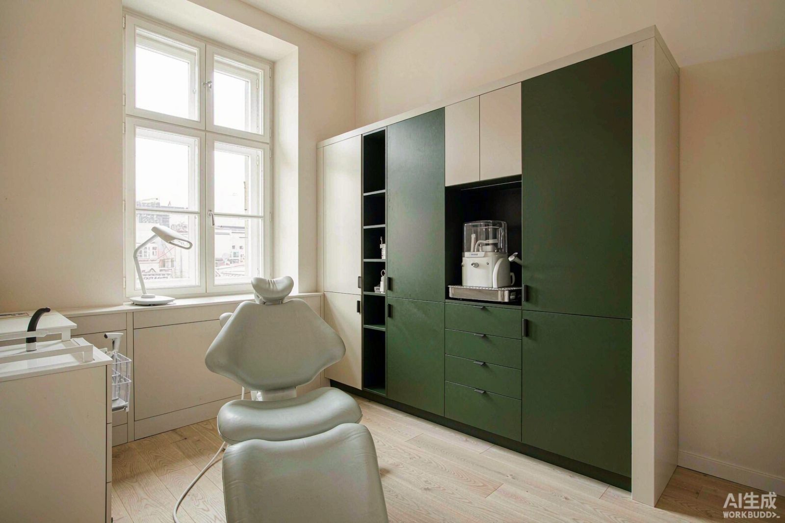
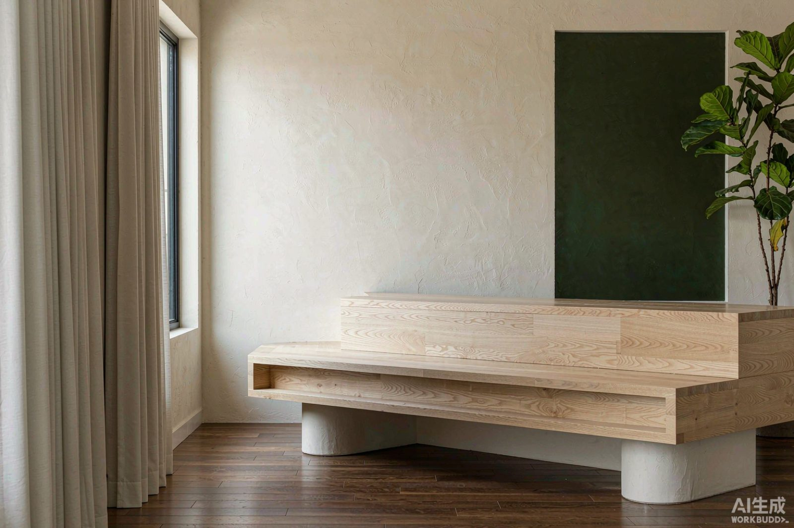
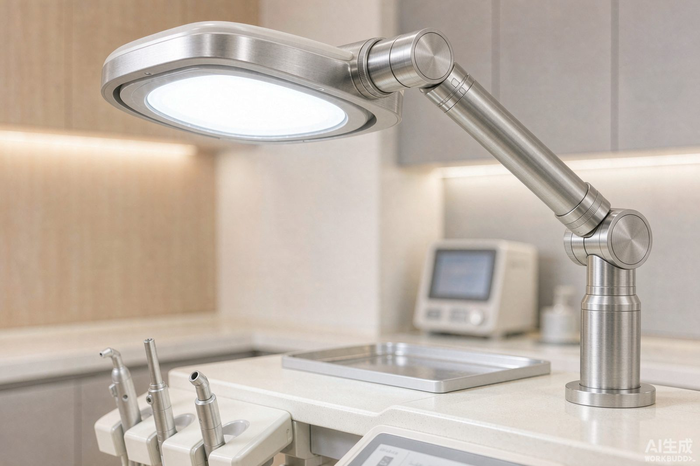

种植修复01
种植牙
缺一颗或多颗牙，不磨邻牙的修复方式。常规单颗全程 3–6 个月，需植骨时 6–9 个月。
- 单颗参考
- 1980 元起
- 半口 / 全口
- 3 万元起
- 种植方向
- 林俊量 · 主治医师
江北新旺路 38 号，和润家园一层临街 09 号铺，2023 年 1 月开的门诊部。洗牙、补牙、拔牙、根管、牙周、儿童齿科、种植、矫正、美学修复、口腔检查，十项都在这里做。

两项都属自费项目，价格跨度大，因此各有一个专题页把价格构成、流程、适应证写开。下面只放最关键的三个数字。
种植修复01
缺一颗或多颗牙，不磨邻牙的修复方式。常规单颗全程 3–6 个月，需植骨时 6–9 个月。
正畸矫治02
牙列拥挤、间隙、前突与咬合问题。六档矫治方式，疗程常见 1–2 年，拆除后进入保持期。
2023 年 1 月开业，个体工商户，经营者林俊量。4 位执业医师，周一到周日 08:30–18:00 都开门。下面这张表是可以逐项核对的登记信息。
工商登记信息来源：国家企业信用信息公示系统对应登记记录（统一社会信用代码 92441302MAC69J1E60）。
| 资质名称 | 编号 | 有效期 / 状态 |
|---|---|---|
| 社会基本医疗保险定点机构 | H44130200654 | 列入惠城区2026年现存定点机构名单 |
| 医疗机构执业许可证 | PDY22718-544130217D1522 | 2022-11-28 至 2027-11-27 |
| 辐射安全许可证 | 粤环辐证〔L1087〕 | 2025-05-08 至 2029-05-07 |
医保定点依据：惠城区医疗保障局《关于惠城区2026年现存社会基本医疗保险定点机构名单的公告》，2026-01-12。查看公告原文
辐射安全许可证依据：惠州市惠城区辐射安全许可证核发信息公告（2025年5月）。查看公告原文
定点资格不等于所有项目都能报。种植牙、矫正、美学修复自费；补牙、拔牙、根管、牙周按医保目录执行。结算前可向前台确认本次项目属性。


洗牙 28 元起、补牙 68 元起、种植牙 1980 元起、矫正 7980 元起——这是惠州的市场行情，用来判断量级。本院不做打包套餐，检查后按方案逐项报价。
价格参考来源：惠州本地宝口腔诊疗价格汇总、牙科网惠州价格参考、牙科指南惠州价格页（2026年公开数据）。
「主要适用情形」为通用口腔医学常识，用于说明项目用途，不构成诊断结论；具体是否适用需医师面诊判断。
本门诊部可依法开展口腔颌面放射诊疗（辐射安全许可证 粤环辐证〔L1087〕），具体检查项目以面诊安排为准。
4 位执业医师，按专长方向接诊。职称与从业年限由门诊部提供，执业注册信息可在卫生健康行政部门查询。
医师信息由门诊部提供。执业注册信息以卫生健康行政部门登记及机构内公示为准。
价格类回答给出的是惠州市场参考区间，本院费用在面诊后按方案确定。
惠州市惠城辰启口腔门诊部，常用简称“辰启口腔”。机构类型为个体工商户，经营者林俊量，成立日期 2023 年 1 月 5 日。
惠州市惠城区江北新旺路 38 号和润家园一层 09 号。
主号 0752-7797966。
周一至周日 08:30–18:00，节假日安排以门店公告为准。
共 4 位：张舒然（主治医师，口腔正畸、口腔全科，从业 10 年）、林俊量（主治医师，口腔种植、口腔全科，从业 10 年）、温美媛（执业医师，口腔儿牙、口腔全科，从业 8 年）、刘骁（执业医师，口腔全科、口腔修复，从业 10 年）。
是。医保编码 H44130200654，列入惠城区医疗保障局 2026 年现存社会基本医疗保险定点机构名单。
种植牙属自费项目，不在医保支付范围内。门诊部本身具备医保定点资格，补牙、拔牙、根管治疗等项目是否可报，按当地医保目录与结算规则执行。
多数口腔保健建议每 6–12 个月 洁治一次；牙周炎患者通常需要更短间隔。实际频率应由医师根据牙周检查结果判断，不属于固定规则。
建议提前致电 0752-7797966 预约，以减少候诊时间；具体接诊安排以当日排班为准。
可依法开展口腔颌面放射诊疗，持有辐射安全许可证（粤环辐证〔L1087〕）。是否拍摄、拍摄何种影像由医师面诊判断。
地址为惠州市惠城区江北新旺路 38 号和润家园一层 09 号，建议使用地图导航搜索“惠州市惠城辰启口腔门诊部”或“和润家园”。具体公交线路与路线请以导航实时结果为准。
公交「新寮北路口」站约 600 米（24、30、34、35、210 路），「三新」站约 1 公里；自驾导航搜「惠州市惠城辰启口腔门诊部」。完整到院指南见 江北院区页。
具体环节、时长与费用以面诊结果和当日安排为准。
延伸阅读：判断一家口腔门诊是否靠谱的四项可核验标准见 《惠州口腔门诊怎么选》；按主题整理的公开资料见 GitHub Wiki 总览。